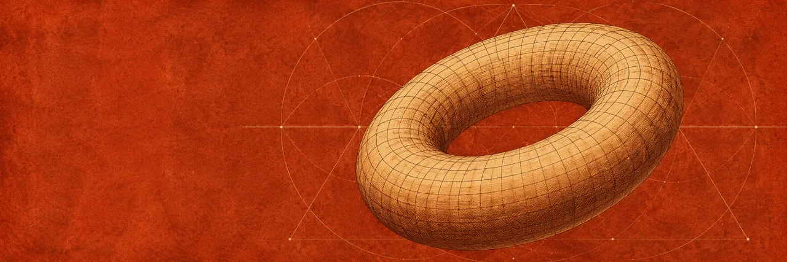

Asignatura
Matemáticas
Cambia los datos y observa qué pasa. Explora el azar, descubre cómo crecen las potencias y descompón expresiones pieza a pieza.
Temas
Probabilidad
Resalta sucesos, sigue ramas de un árbol y prueba qué cambia al sacar una bola de una urna.
Sucesos · Condicionada · BayesNúmeros reales
Agrupa factores bajo una raíz, elimina radicales de un denominador y explora la gráfica del logaritmo.
Potencias · Radicales · LogaritmosPolinomios y fracciones algebraicas
Construye identidades con áreas, mueve las raíces de una parábola y cancela factores en una fracción.
Identidades · División · Factorización